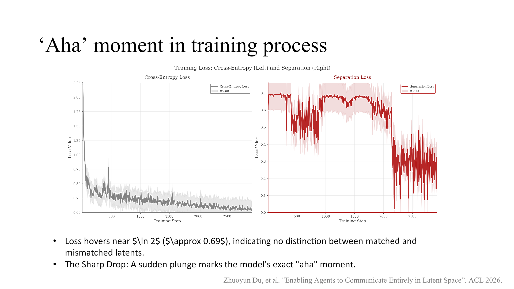
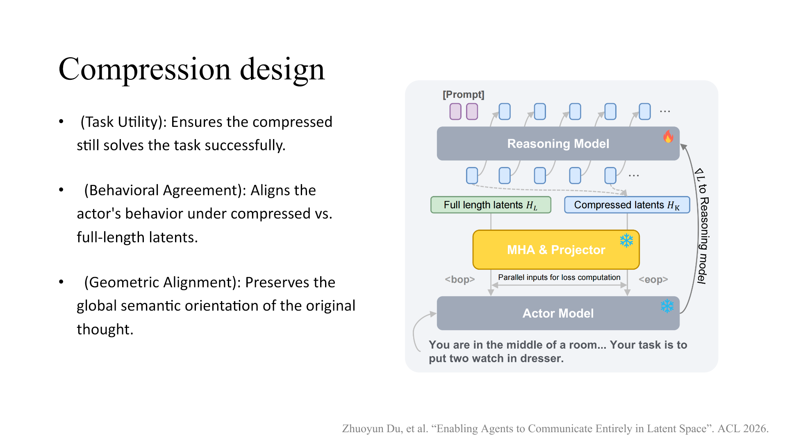
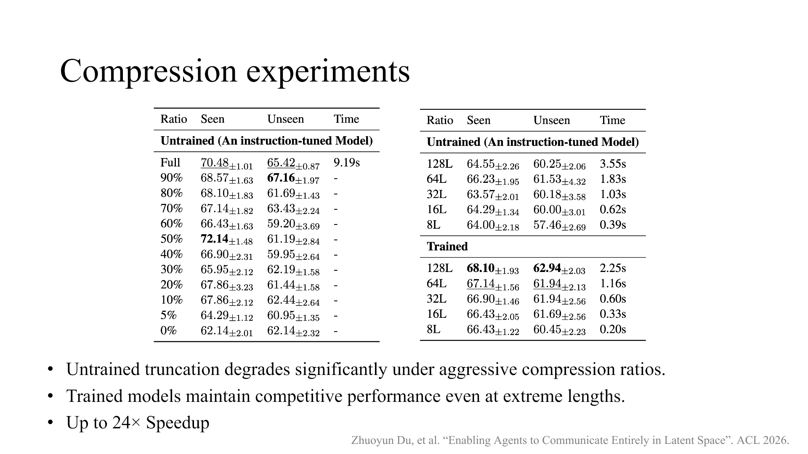
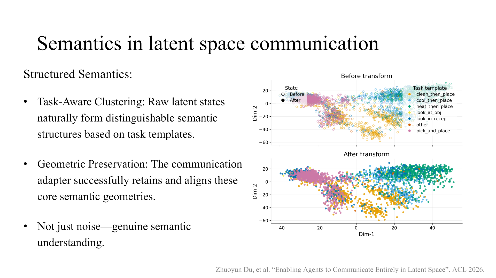
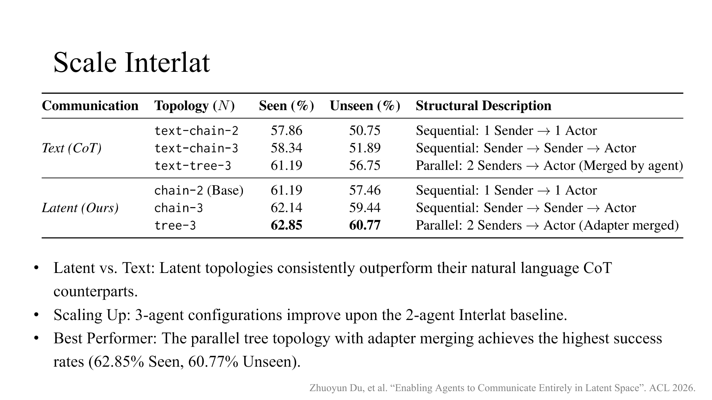

Research
Interlat: Enabling Agents to Communicate Entirely in Latent Space
Natural language is a convenient interface between LLM agents, but it is not a neutral one. Interlat replaces tokenized messages with continuous hidden states, then learns to compress those states without forcing them back into words.
Most multi-agent systems assume that agents should talk the way people do: one model writes a plan, another reads it, and collaboration happens through text. In our ACL 2026 paper, we ask a more basic question: does communication between language-model agents need to pass through language at all? Interlat treats an agent's last-layer hidden states as the message itself. A small learned adapter translates that continuous representation into a form another agent can consume, creating an inter-agent channel that remains entirely in latent space.
Paper and code
ACL 2026 paper · PDF · Code

Language is useful, but lossy
Natural language gives agents a modular, inspectable, and model-agnostic protocol. Those are real advantages. But text also imposes a narrow bottleneck between two high-dimensional computations. A sender must project its internal state through a vocabulary head, commit to one token at a time, obey grammatical conventions, and serialize information that may have been represented in parallel. The receiver then reconstructs an internal representation from those tokens.
Consider a model with a 32,768-word vocabulary and a 2,560-dimensional hidden state stored at 16-bit precision (the reported experiments use bfloat16). A token identity carries roughly
while one dense hidden state occupies
This comparison is about raw representation width, not storage efficiency or a claim that every bit is meaningful. In fact, transmitting an uncompressed sequence of dense states can be more expensive than transmitting token IDs. The point is that token sampling creates an unusually restrictive interface: it forces the sender to choose a discrete symbol before the receiver can continue computing.
Interlat asks whether we can retain the richer continuous channel while learning a separate solution to its cost. That separates two questions that text normally conflates:
- Expressivity: what representation should one agent expose to another?
- Efficiency: how much of that representation must be generated and transmitted?
The Interlat communication interface
Interlat begins with two roles. A reasoning model processes the task and produces a sequence of last-layer hidden states. An actor model receives the resulting latent message and generates the final action or answer.
Let the sender's completion contain \(L\) positions and let \(h_\ell\in\mathbb{R}^{d_s}\) denote the final hidden state at position \(\ell\). The latent message is
A lightweight communication adapter—multi-head attention followed by a projection—maps \(H\) into the actor's embedding space:
The actor consumes \(Z\) between boundary markers as if it were an embedding sequence. There is no need to decode the sender's state into words and no need to share model parameters or transfer the sender's KV cache. Because the adapter can change dimensionality, the two agents can also come from different model families.
The adapter is not merely a connector
Raw hidden states are organized for the sender's own next-token prediction. The adapter learns which parts should be exposed, how they should be combined, and how to express them in the receiver's coordinate system. In the ablation study, removing this module reduces ALFWorld success to roughly 4%, showing that direct compatibility cannot be assumed.
Teaching the actor to use the message
A working channel needs more than end-task supervision. If we optimize only the actor's answer loss, it may learn to ignore the latent message and solve easy examples from the prompt alone. Worse, a high-dimensional sender and receiver may discover shortcuts that fit the training objective without preserving a useful notion of a plan.
The actor objective combines task supervision, conditional separation, and plan alignment:
Each term addresses a different failure mode:
- Task loss. Standard cross-entropy teaches the actor to produce the correct action or answer.
- Matched-versus-mismatched separation. We pair the actor with the correct latent message \(H\) and with a mismatched message \(\widetilde H\). A negative Jensen–Shannon term rewards the output distributions for those two conditions becoming distinguishable:
- Plan-aligned regulation. Separation alone can be gamed: the actor could increase divergence by moving probability mass toward idiosyncratic tokens that hurt the task. A natural-language plan \(P\), generated by the same instruction-tuned sender, provides a behavioral and geometric reference:
The KL term regularizes the latent-conditioned action distribution toward the plan-conditioned distribution. The cosine term operates on normalized logits, preserving a similar global preference geometry even when exact token probabilities differ.
A token-to-latent curriculum
A pretrained actor initially understands token embeddings, not a foreign sequence of continuous states. During training, we therefore sample \(r\in\{0,0.1,\ldots,1.0\}\) and replace an early prefix of the communication with the corresponding plan-token embeddings:
At \(r=1\), the actor sees a fully textual embedding sequence; at \(r=0\), it receives the full latent message. Sampling intermediate mixtures turns the new interface into a gradual distribution shift. This curriculum is not cosmetic: removing it lowers ALFWorld success from 70.48/65.42 on seen/unseen tasks to 33.10/20.65.

Compressing communication in latent space
Full-length hidden states remove token sampling from the communication interface, but they do not automatically reduce the number of autoregressive sender steps. If the reasoning model still produces one state for every position in a long textual plan, generation latency remains.
The second stage therefore trains a reasoning model to generate a shorter latent sequence directly. During latent autoregression, the model bypasses the language head and feeds its last hidden state back as the next input embedding. The goal is not to truncate a completed sequence after the fact, but to learn a compact trajectory whose states retain the information the actor needs.

The compression model is trained through a frozen actor and adapter. For each supervised token position, the actor is evaluated along three paths: \(A\) uses the generated short message \(H_K\), \(D\) uses the full reference \(H_L\), and \(B\) receives no latent message. This makes it possible to optimize what the message does to the receiver rather than reconstructing every sender state.
Three objectives keep the bottleneck useful:
- Task utility. Cross-entropy under path \(A\) requires the compressed message to preserve correct next-token predictions.
- Uncertainty-weighted behavioral agreement. Positions receive high weight only when the full latent message reduces the actor's entropy relative to no communication:
The compressed path is then distilled toward the full path at those informative positions:
This is functional compression rather than state reconstruction. Full and short trajectories need not have a one-to-one alignment; they only need to induce similar behavior where the original message was useful.
- Geometric alignment. After length alignment, the step-averaged actor-side features should point in the same global direction:
The complete compression objective is
The distinction between learned compression and naive truncation is crucial. Truncation assumes useful information is concentrated in an arbitrary prefix or suffix. Learned latent reasoning can reorganize the trajectory so that a small number of recurrent states become an information-preserving bottleneck.
What the experiments show
We evaluate Interlat on ALFWorld, where an agent must execute multi-step actions in text-based household environments, and on MATH, where the final answer depends on mathematical reasoning. The main comparison separates latent communication from textual communication, no communication, and single-agent chain-of-thought baselines.
Experimental controls
The actors are Qwen2.5-7B/0.5B-Base and Llama-3.1-8B-Base, which helps isolate the communication mechanism from instruction-tuning priors. Their instruction-tuned counterparts generate the CoT plans and full-length latent references. ALFWorld episodes are capped at 20 actions. The actor is trained with AdamW at \(10^{-5}\), global batch size 16, and annealed separation/alignment weights; the compressor uses a frozen actor, learning rate \(5\times10^{-5}\), and unit weights for its three losses. Models are selected on a 5% validation split, and reported results are averaged over three independent runs.
ALFWorld: the latent channel is used and generalizes
| Model / method | Seen | Unseen |
|---|---|---|
| Qwen2.5-7B Interlat | 70.48 | 65.42 |
| Qwen2.5-7B text communication | 64.29 | 62.44 |
| Qwen2.5-7B CoT (full) | 67.14 | 64.93 |
| Qwen2.5-0.5B Interlat | 61.19 | 57.46 |
| Qwen2.5-0.5B text communication | 54.52 | 47.26 |
| Qwen2.5-0.5B CoT (full) | 57.86 | 50.75 |
| Llama-3.1-8B Interlat | 70.71 | 70.90 |
| Llama-3.1-8B text communication | 62.86 | 60.82 |
| Llama-3.1-8B CoT (full) | 69.35 | 70.82 |
The paper reports step counts as successful episodes / all episodes. Interlat often takes longer successful trajectories than text communication while also improving success. The appendix adds an important control: some ablations take even more steps on failed tasks. Length alone is therefore not evidence of exploration; it becomes meaningful only when paired with higher completion rates.
Structured perturbations provide stronger evidence that the channel carries task-specific content. With Qwen2.5-0.5B, replacing real latents by zero-mean covariance-matched Gaussian samples drops seen/unseen success from 61.19/57.46 to 13.81/13.18, even though second-order statistics are retained. Cross-task messages fall to 53.57/47.01, and random rotations also degrade performance. Conversely, Qwen-derived latents consumed by a Llama actor reach 70.95/71.39. These results support functional dependence on higher-order latent structure and show that an adapter can bridge different model families; they do not prove a universal model-agnostic language.
MATH: better on the hardest split, not universally better
| Method | Overall | Level 3 | Level 4 | Level 5 |
|---|---|---|---|---|
| Interlat | 36.88 | 40.08 | 27.45 | 15.80 |
| Text communication | 34.35 | 37.60 | 26.30 | 14.20 |
| No communication | 33.27 | 36.40 | 26.20 | 13.10 |
| CoT (full) | 38.35 | 45.65 | 31.19 | 15.05 |
Interlat improves over text communication and no communication across the reported aggregates, and it performs best on Level 5. The full CoT baseline still has the highest overall, Level-3, and Level-4 scores. Our interpretation is therefore narrower than “latent always beats language”: delaying discrete commitment appears most helpful on the hardest problems, while explicit linearized reasoning can regularize simpler ones.
Learned compression trades a small amount of success for much lower latency

At eight latent steps, the trained compressor reaches 66.43 on seen and 60.45 on unseen ALFWorld tasks, compared with 70.48 and 65.42 for the full message. Message-generation latency falls from 9.19 s to 0.39 s for an untrained eight-step latent, or 0.20 s with the trained lightweight bridge. The nearly 24× comparison is 9.19 s versus 0.39 s; the additional reduction reflects removing much of the decode–re-encode overhead.
Why does learned compression survive?
The paper measures how compression changes the frozen actor's cross-entropy relative to the full message:
As the retained communication rate \(R\) increases, the CE penalty decreases and plateaus across roughly 30%-75%, which is also where empirical performance is strongest. Learned compression produces lower CE than training-free truncation at every tested rate, with a maximum gap of about 11 percentage points. This supports the idea that training reorganizes information into the bottleneck rather than merely discovering a lucky truncation point.
Ablations: which parts are load-bearing?
| Component removed | Seen | Unseen | Interpretation |
|---|---|---|---|
| Actor: none | 70.48 | 65.42 | Full Interlat actor |
| Curriculum | 33.10 | 20.65 | Direct latent interpretation is unstable |
| \(\mathcal{L}_{\mathrm{sep}}\) | 58.81 | 60.70 | Actor can fall back toward prompt-only behavior |
| \(\mathcal{L}_{\mathrm{align}}\) | 56.90 | 53.98 | Separation without regulation loses task utility |
| Adapter | 4.05 | 4.48 | Sender and actor spaces are not directly compatible |
| Compressor: none | 68.10 | 62.94 | Full three-loss compressor at \(K=128\) |
| \(\mathcal{L}_{\mathrm{task}}\) | 65.71 | 63.18 | Small seen/unseen trade-off |
| \(\mathcal{L}_{\mathrm{pref}}\) | 64.76 | 60.20 | Behavioral equivalence is weakened |
| \(\mathcal{L}_{\mathrm{geom}}\) | 64.05 | 59.45 | Largest compression-ablation drop |
The actor-side result is especially revealing: removing the adapter still produces fluent text, but almost never solves the task. Fluency is not evidence that a receiver has interpreted a latent message. On the compression side, geometry alignment is the most important of the three terms in this setting, followed by uncertainty-weighted agreement. Removing task cross-entropy slightly improves the unseen mean while hurting seen performance, suggesting a possible in-distribution/generalization trade-off rather than a monotonic ranking of losses.
Do the latent messages contain structure?
Continuous communication is difficult to inspect directly. We therefore use behavioral perturbations and representation analysis rather than treating a two-dimensional plot as proof of “understanding.” The raw sender states form task-dependent clusters, and the transformed representations retain much of that organization after passing through the adapter.

The actor's output distributions offer another view. The analysis normalizes over the top-10 tokens, plots cumulative mass for the top six, and summarizes head concentration with \(P_{50}(S_{10})\), the median cumulative probability mass of the top-10 set. Under naive compression, probability mass rapidly concentrates toward the top prediction. After compression training, successive top-\(k\) bands remain separated and \(P_{50}(S_{10})\) is lower across the analyzed steps. That pattern is consistent with broader support over plausible continuations before the actor must commit to a discrete action.
This connection to exploration is suggestive rather than definitive. A broad output distribution is not itself a search algorithm, and a cluster is not a human-readable concept. What the experiments establish more directly is that the latent message is task-dependent, perturbation-sensitive, and behaviorally useful.
From a pair of agents to communication topologies
A two-agent channel is a building block, not a full multi-agent architecture. We also test whether the interface can compose across three-agent topologies. In a sequential chain, a strategist passes a latent message to a compiler, which refines it for an actor. In a parallel tree, an explorer and a critic produce messages independently, and an augmented adapter merges them for the actor.

The result is small-scale but informative. Adding agents is useful only when the communication structure gives them distinct computational roles. The parallel tree performs best because it can generate complementary representations and let the adapter fuse them, rather than forcing every contribution through a single serialized chain.
What this result does—and does not—establish
Interlat is best viewed as a feasibility study for an alternative agent interface. It shows that entirely latent inter-agent communication can be trained, used across heterogeneous models, compressed, and composed into simple multi-agent topologies. It does not show that text should disappear from agent systems.
- Latent communication is less inspectable. Text provides a natural audit trail; continuous messages require probes, perturbations, and external safeguards.
- Raw latents are expensive. Their greater representational width is a motivation for learned compression, not a free efficiency gain.
- Compatibility must be learned. Hidden-state spaces are model-specific, and the adapter is responsible for translating between them.
- Internal activations must be accessible. The present design requires last-layer hidden states, so it cannot be applied directly to closed or API-only models that expose only tokens.
- The evaluation scope is limited. ALFWorld and MATH reveal planning and reasoning behavior, but they do not establish universal gains across tasks, team sizes, or model scales.
- Semantics remain partly opaque. Structured geometry and causal sensitivity show that the messages carry useful information; they do not make every latent dimension interpretable.
- Safety monitoring becomes harder. An opaque latent channel could theoretically bypass language-level filters. The reported experiments contain no harmful instructions or actions, but controllable and auditable latent protocols remain an open requirement.
The broader opportunity is a hybrid design space. Agents may use text when humans need to inspect, edit, or approve a message, and latent channels when models need a high-capacity internal interface. Communication can become an architectural choice rather than an unquestioned consequence of using language models.
Takeaways
- Tokens are not the only possible agent interface. Last-layer hidden states can be transmitted through a learned adapter and consumed directly as receiver embeddings.
- Behavioral supervision matters. Matched/mismatched separation and plan regulation help prevent the actor from ignoring the message or exploiting an arbitrary shortcut.
- Compression must be learned. Latent autoregression reorganizes information into a short trajectory; simply truncating a full sequence is much less reliable.
- The strongest evidence is causal and behavioral. Perturbations hurt, cross-model transfer works, and ablations identify the adapter and curriculum as essential.
- This is a starting point. Larger teams, richer topologies, interpretability, controllability, and secure latent protocols remain open problems.
Sources and figure credits
- Zhuoyun Du, Runze Wang, Huiyu Bai, Zouying Cao, Xiaoyong Zhu, Yu Cheng, Bo Zheng, Wei Chen, and Haochao Ying. Enabling Agents to Communicate Entirely in Latent Space. ACL 2026.
- ArXiv manuscript and supplementary material.
- Interlat implementation.
Figure 1 is the Interlat overview used on my research page. Figures 2–6 were rendered from my ACL 2026 presentation and edited only through selection and captioning. The equations follow the manuscript's notation; refer to the paper and appendix for complete normalization, sampling, and implementation details.
Read ... times